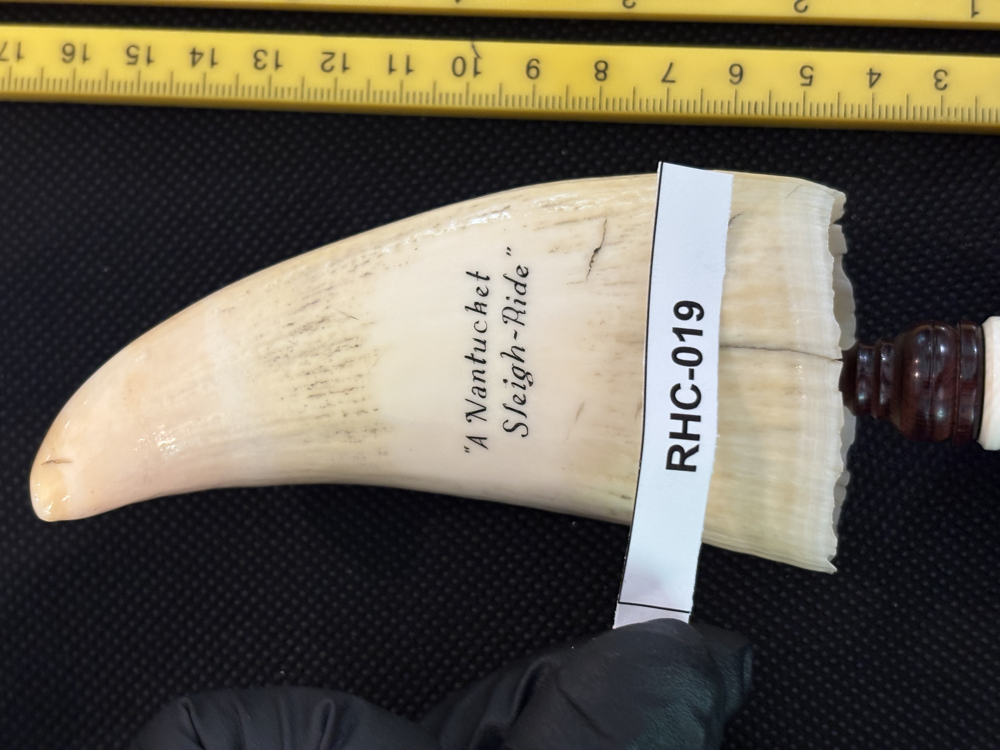
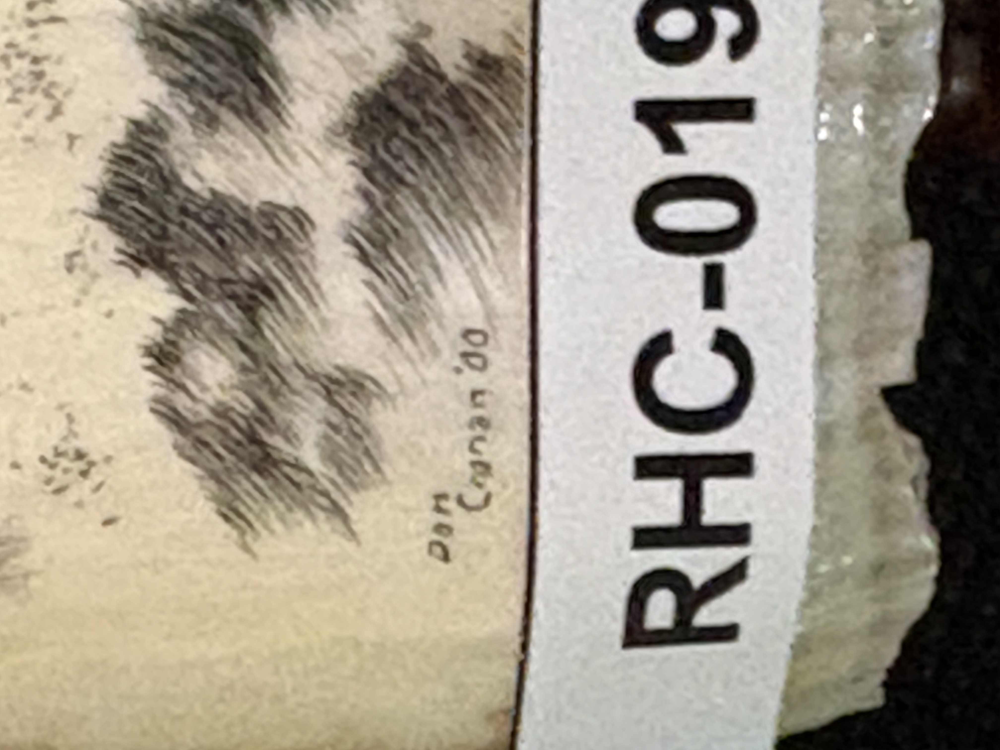

RHC-019 reviewed
"A Nantucket Sleigh-Ride" — Engraved Tooth, Signed Dan Cronan '00, on Turned Wood Baluster Base


- Object Type
- Engraved tooth, mounted on a dark wood baluster/pedestal-style display base
- Material
- Sperm whale tooth (confirmed by Richard H. Cornelia).
- Dimensions (cm)
- length: 9.5cm — Length (~9.5cm) estimated off the cm scale; width not separately measured.
- Subject Matter
- A dramatic 'Nantucket sleigh-ride' scene — the traditional whaling term for a whaleboat being towed at speed by a harpooned, running whale. The engraving shows a sailor/whaler figure braced and hauling on a line, with additional dark cross-hatched shapes in the background suggesting rigging, a whaleboat, and turbulent water. Rendered in black ink line work with dense cross-hatched shading, no color.
- Inscriptions
- “A Nantucket Sleigh-Ride”
- “Dan Cronan '00”
- “A Nantucket Sleigh-Ride”
- Artist Attribution
- Dan Cronan
- Date / Period
- 2000 (dated '00 in signature)
- Mount / Display Stand
- Mounted for display on a dark turned wood baluster/pedestal-style base, similar in general style to RHC-010's mount, with a small light-colored ferrule/collar where the tooth's root meets the base.
- Color / Technique
- Traditional black ink line scrimshaw engraving with dense cross-hatched shading, no color
- Condition Notes
- A couple of fine surface cracks are visible running across the tooth's face; otherwise the surface appears glossy and intact. Not physically examined.
- Distinguishing Features
- One of the most clearly identified pieces in the collection so far: both a titled inscription ('A Nantucket Sleigh-Ride') and a legible artist signature with date ('Dan Cronan, 2000) engraved directly into the scene itself, rather than on an added plate or a hard-to-read mark. 'Nantucket sleigh-ride' is a well-known historical whaling term, giving this piece strong thematic/interpretive value for display. Companion piece to RHC-020, a pirate scene signed by the same artist ('Dan Cronan '01') one year later.
- Legal / Regulatory Status
- If confirmed sperm whale tooth, piece postdates the 1972 MMPA cutoff by decades (dated 2000) — modern-manufacture restrictions would likely apply if so. Flag for legal review before any loan/sale; not a legal determination.
- Acquisition Info
- Shipped to Richard H. Cornelia by Dan Cronan around 2001.
- Rights / Copyright
- Signed 'Dan Cronan' and dated 2000 — underlying image likely remains under the artist's copyright, independent of physical ownership.
- Keywords
- Nantucket sleigh-ride whaling signed Dan Cronan dated 2000 titled wood baluster base engraved tooth scrimshaw
- Status
- reviewed
- Date Cataloged
- 2026-07-15
Open Research Questions
Research finding (phase 3, 2026-07-15): Dan Cronan is a confirmed, actively-collected contemporary scrimshaw artist working in traditional black-and-white style on sperm whale tooth, mammoth ivory, and fossil mammoth tusk — pieces including 'Wanderer Drying Sails' (1996) and 'John Paul Jones' (1999, mammoth ivory) circulate through scrimshaw dealer/collector sites (Scrimshaw Collector, Scrimshanders), confirming an active output window spanning the late 1990s through at least 2000-2001, consistent with this piece's 2000 date. Titled, hand-signed, dated work of this kind by a named contemporary scrimshander has modest but real collector value; worth flagging for a market-comp pass later. Per Richard H. Cornelia (written review of printed catalog booklet, 2026-07-19): "Definitely a sperm whale tooth… no presumption necessary. Dan shipped this item to me around 2001."